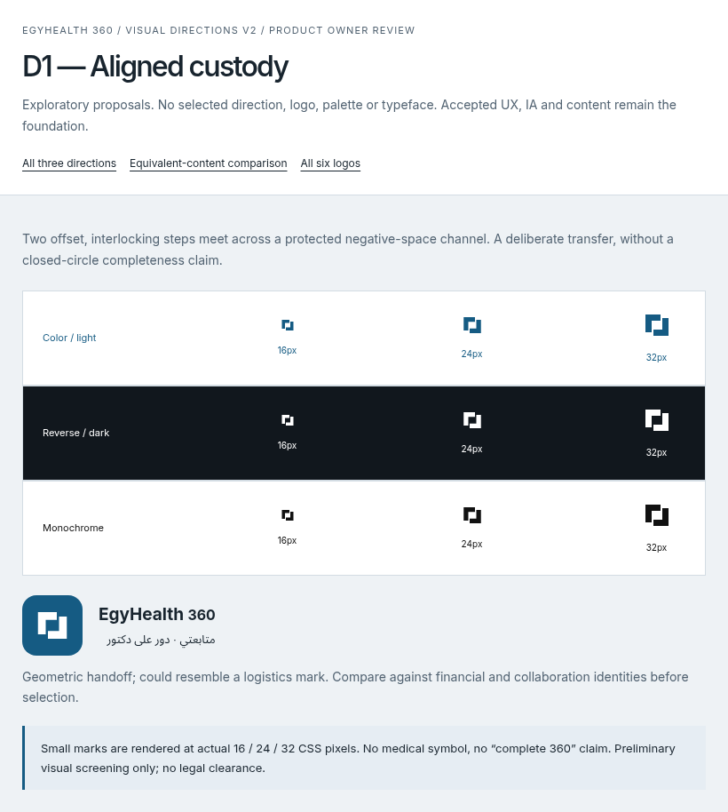
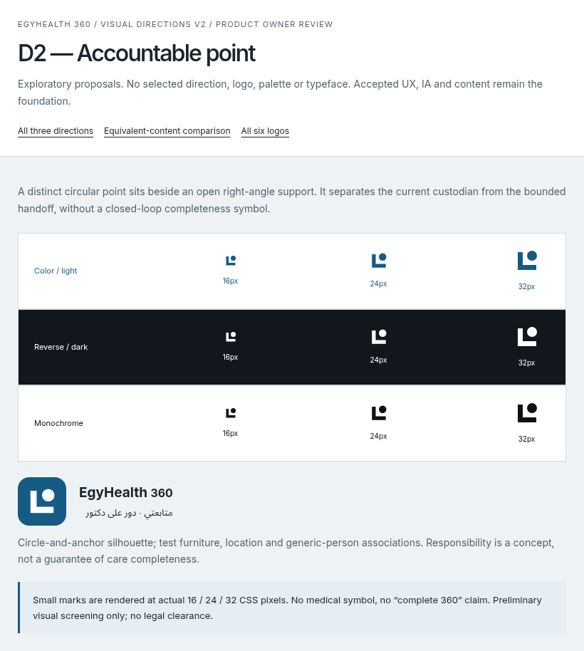
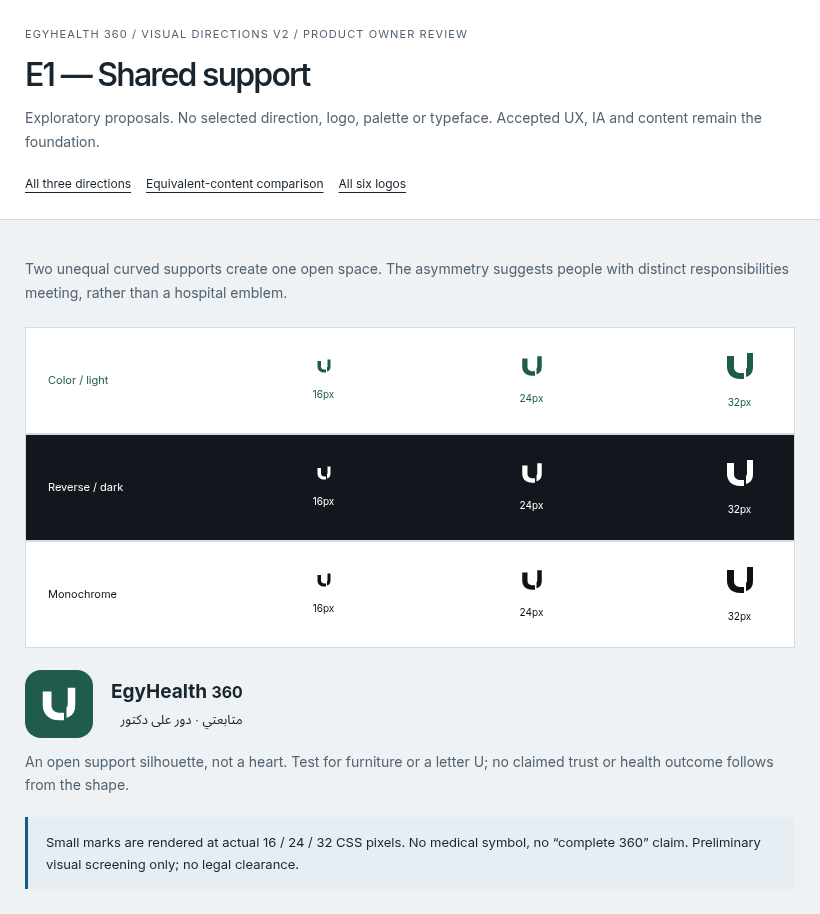
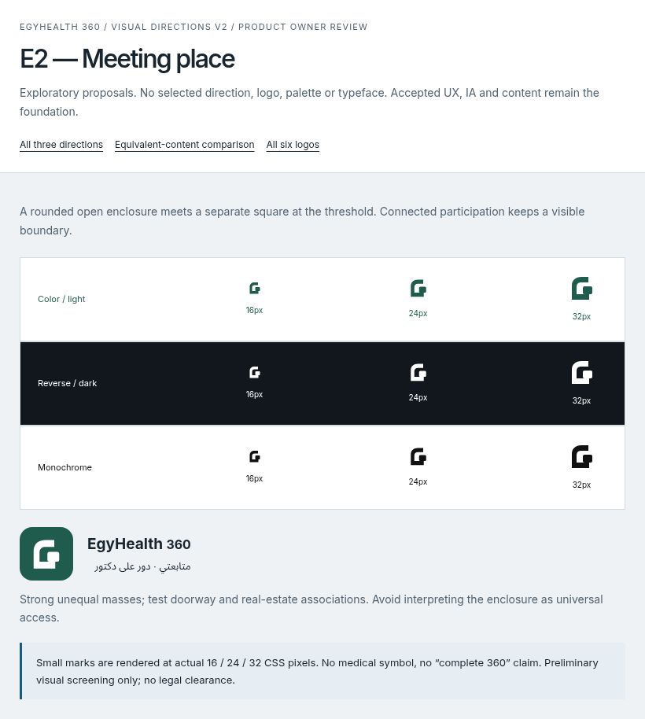
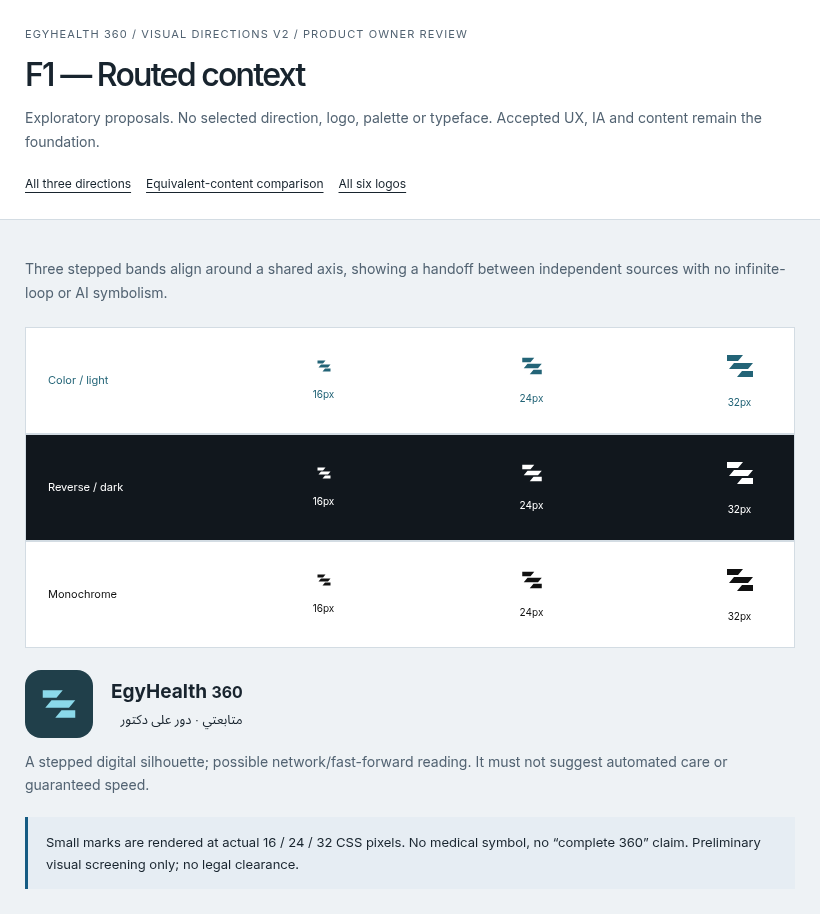
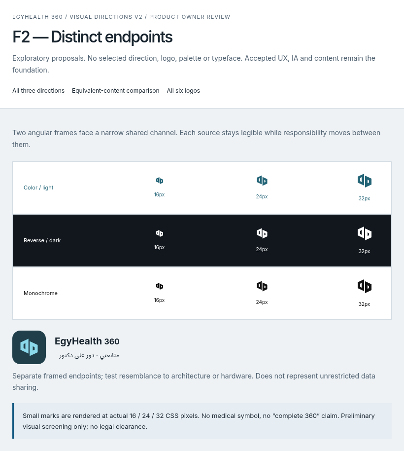

D1 · Aligned custody
Two offset, interlocking steps meet across a protected negative-space channel. A deliberate transfer, without a closed-circle completeness claim.

Geometric handoff; could resemble a logistics mark. Compare against financial and collaboration identities before selection.
D2 · Accountable point
A distinct circular point sits beside an open right-angle support. It separates the current custodian from the bounded handoff, without a closed-loop completeness symbol.

Circle-and-anchor silhouette; test furniture, location and generic-person associations. Responsibility is a concept, not a guarantee of care completeness.
E1 · Shared support
Two unequal curved supports create one open space. The asymmetry suggests people with distinct responsibilities meeting, rather than a hospital emblem.

An open support silhouette, not a heart. Test for furniture or a letter U; no claimed trust or health outcome follows from the shape.
E2 · Meeting place
A rounded open enclosure meets a separate square at the threshold. Connected participation keeps a visible boundary.

Strong unequal masses; test doorway and real-estate associations. Avoid interpreting the enclosure as universal access.
F1 · Routed context
Three stepped bands align around a shared axis, showing a handoff between independent sources with no infinite-loop or AI symbolism.

A stepped digital silhouette; possible network/fast-forward reading. It must not suggest automated care or guaranteed speed.
F2 · Distinct endpoints
Two angular frames face a narrow shared channel. Each source stays legible while responsibility moves between them.

Separate framed endpoints; test resemblance to architecture or hardware. Does not represent unrestricted data sharing.